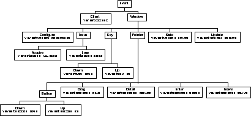

Event Manager
The Event Manager provides a logical interface for event-driven applications. It allows an application to respond to both internal and external events in an ordered fashion. The Event Manager places events into event queues which are then handled by event loops. This processing of events is done internally by the Event Manager.
Use the Event Manager when your application needs to handle incoming events, gather information from events, or programmatically generate events.
The Event Manager uses the Name class to gather and set event information. The Event Manager also interacts with the Client class to register quitter functions, and the Exception class to handle exceptions. You should be familiar with these managers to better understand this chapter.
Many high level classes use the Event Manager. Events that are dispatched by the Event Manager are routed through the Application class. The Application class is thus responsible for distributing events to its windows.
The Window class intercepts and processes windowing events, such as minimizing, maximizing, moving, and sizing. The Window class is responsible for distributing events to its items. Refer to the Application class and Window class chapters for details on how these classes handle events.
Other classes, such as the Confirm and Notification class, create event sub-loops. These process important events and prevent any events from reaching the main event loop. Refer to these classes to gain a better understanding of how to use and control event sub-loops.
- block Sit and wait for an interesting event before returning to the
caller (such as a timer or user input.)
continuation event Advanced concept of event-driven programming where some work is done by an event handler, then the event is scheduled for a future time in order to do more work.
event Packet of information representing some action that took place in an application.
event handler Any function called in response to an event being generated. When an event handler is passed an event, it performs a series of instructions and then returns a boolean value to the caller.
event loop Running loop of control that pulls events from event queues and gives them to event handlers one at a time.
event preblocker Function called just before an event loop is about to block for a non-zero length of time.
event queue Holds events in an ordered fashion based upon time and priority. Events are added to, or removed from, the event queue.
event loop quitter Called when an event loop is told to terminate.
event sub-loop Self-contained loop called from within another loop that runs to completion before returning to the caller.
future events Events that are scheduled to take place at some future time.
key Reference to any single key that might be located on a keyboard.
key modifier Any mouse button or key such as Alt, Control, Shift, and Command, pressed in combination with another key.
keystroke A key and any combination of key modifiers that might be struck at the same time on a keyboard. For example, pressing the `s' key while holding down the Shift and Control key modifiers is considered a single keystroke.
now events Events that should be processed immediately, or at least as soon as the event loop is able to process other events that might be queued ahead of it.
post Same as queue.
pre-queue To place an event on an event queue before the event queue has been accessed by an event loop.
queue Programmatically placing an event on an event queue.
timestamp Lightweight, relative reference to a point in time. Timestamps are associated with events to indicate when an event took place or is scheduled to take place.
Event Driven Programming
The Event Manager is an abstraction based upon the concept of event-driven programming; it allows your application to call certain event handlers when events are generated.Most events are generated automatically by the operating system or the windowing system. Each event is automatically translated by the Event Manager, assigned a value representing the time the event took place, assigned a priority, and posted to the event queue to be processed.
The Event Manager has an event hierarchy, broken up according to event types. Note that every event has an event type, represented by each leaf of the tree illustrated in Figure 32.
Figure 32. Galaxy event hierarchy

Many events are automatically handled by the Event Manager. For example, most events dealing with windowing are handled by the Event Manager, freeing you from writing your own event handlers for common processes, such as minimizing a window. Refer to the Window class for details on which events are handled automatically.
Example 53. Starting the main event loop
Be aware that if any exception handler throws an exception, the call backs out through Process. For this reason, you may want to wrap Process in an exception handler, as illustrated in Example 54.
Example 54. Exception handling the main event loop
Example 55. Stopping the main event loop
Example 56. Check for mouse or keyboard event
A common use of the event binding is to specify different functionality for an event dependent upon the context. Example 57 is a procedure that handles button down events in a dialog, providing different behavior depending on which mouse button was clicked.
Example 57. Determining the mouse button
To determine which window an event was generated in, use GetWindow. Information about a window's location and size can be found using GetConfigureX, GetConfigureY, GetConfigureHeight, and GetConfigureWidth.
If you want to create your own event, you must first determine what type of event you want to create. Several Create functions are provided that create and initialize an event to a standard set of values appropriate for that type of event, such as a Key event type, a Pointer event type, and so forth. See the Galaxy Application Environment Reference Manual for a complete list of creation functions.
After creating an event, the event must be posted to the existing event queue by using Post. Example 58 demonstrates creating and posting an event that tells your application that the Return key has been pressed.
Example 58. Creating and posting a keyboard event
Example 59. Creating and posting a new event type
Example 60. Posting events to a future time
Note that the Timer class provides flexible, automatic handling of future events for the purpose of calling procedures after a given time. Consider using it for any type of periodic or recurring callbacks that you want to use, rather than using the Event Manager to post events into the future.
Another method is to use Unpost to remove any events that refer an object from the event queue. Note that unposting an event does not destroy the event. It can be posted to another event queue or destroyed depending on the application's functionality.
Note that even if all the quitters finish their work and return correctly, the event loop may still finish processing any events remaining in the queue before leaving Process. Refer to the Client class for details on registering shutdown procedures.
Example 61. Flushing the event queue
If you have a continuation event running, posting of events should be stopped before attempting to shutdown. A continuation event can clog the Event Manager and hang the shutdown process. Often the delay between leaving the procedure and calling the procedure may be so short that slower machines are not able to process other events in the queue before calling the procedure again. As a result, the event queue gets bigger and bigger, with little chance that the event handler will catch up. Timers provide a better solution to this problem. Refer to Timer chapter for details on how to use timers.
Event Loops
The heart of any event driven program is the event loop. Most event loops have four main steps:
The event loop, once started by the application, continues processing events in this manner until the application tells it to stop.
Event Handlers
The Event Manager allows you to assign, or register, an event handler. When the Event Manager sees an event, it calls the assigned handler. The handler can, in turn, call other functions in order to perform a given task. Upon completion, a handler should return a boolean value to indicate whether it was successful in completing the task. Starting the Main Event Loop
Most functions in the Event Manager assume that an event loop is currently running. As a result, before executing any other Event Manager routines, it is important to start the main event loop. The main event loop is commonly started in main with a call to Process, as illustrated in Example 53.int main(int argc, char *argv[])
{
/* start up Galaxy */
vstartup(argc,argv);
/* Do initial setting up */
mySetup();
/* Enter the main event loop */
veventProcess();
/*
* If we made it to here, the event loop was stopped, so
* clean up memory, and so forth before exiting.
*/
myCleanup();
return EXIT_SUCCESS;
}
The call to Process enters a loop that waits for the next event and then dispatches it. It does this until told to stop by the application, at which point the program exits. // ...
vexWITH_HANDLING
veventProcess(); /* Enter the main event loop */
vexON_EXCEPTION
myHandleError();
vexEND_HANDLING;
// ...
Refer to the Exception chapter for details on how to handle exceptions. Stopping the Main Event Loop
When quitting your program, make certain there is an orderly termination of the event loop and any sub-loops currently running. This can be done with Quit which attempts to quit all event loops currently running. In Example 55, a dialog notification routine is used.void myDialogNotify (vdialog *dialog, vevent *event)
{
/* Check to see if they chose the Close item */
if (veventIsClose(event)) {
/* Stop the main event loop */
veventQuit();
}
}
Here IsClose determines if the event was a Close event. If it was, the event loop finishes processing all events in the queue, and then returns from the Process call in main. The Event Manager provides convenience functions to determine the type of windowing event, such as IsIconify, IsSize, IsMove, and IsMaximize. Determining the Event Type
There are many different types of events that can be generated in an application. You can determine what type of event was generated using GetType, which examines the event passed to it and returns the type of event. You can find a list of possible event types in the Galaxy Application Environment Reference Manual under the vevent module. Example 56 provides a way to respond to a mouse click differently than a keyboard action, void myButtonNotify (vbutton *button, vevent *event)
{
/* Check to see if they used the mouse */
if (veventGetType(event) == veventBUTTON_UP) {
/* They clicked on it with a mouse */
} else if (veventGetType(event) == veventKEY_UP) {
/* They used the keyboard */
}
}
Event Bindings
An event can also have a binding associated with it. The binding (a const vname *) is the symbolic representation of the associated event, and can be found with GetBinding. Note that the Event Manager does not assign any bindings itself; that is left to other higher level classes that interface with the Event Manager. Refer to the Name chapter for information on tags, names and bindings. static int HandleButtonDown(vdialog *dialog, vevent *event)
{
/* does one of the items in the dialog's list
* want to handle this? */
if (vdialogHandleItemListButtonDown(vdialogGetItemList(dialog),
event))
return TRUE;
/* did the event occur in the menu? (and is there a menu?) */
if (veventGetBinding (event) == vname_Menu &&
vdialogGetMenu(dialog) != NULL) {
/*
* Move the menu so that its default item
* (or first item if there is no default item)
* is under the position stored in event
*/
vmenuPlaceEvent (vdialogGetMenu(dialog), event);
/*
* opens the menu at its current position
* and passes it the event
*/
(void)vmenuPopup (vdialogGetMenu(dialog), event);
/* we handled the event */
return TRUE;
}
/* we didn't handle the event */
return FALSE;
}
In this case, the procedure looks for an event binding called vname_Menu, meaning that the user pressed the "menu" mouse button while clicking in the dialog. If the mouse button is pressed, the procedure pops up the menu associated with the dialog. Gathering Miscellaneous Event Information
Events also contain useful information about the event that was generated. For example, GetPointerX and GetPointerY tell where the pointer was located in the dialog when the pointer event took place. Similarly, GetPointerButton tells you which mouse button caused the event, while GetPointerClickCount returns the number of times the pointer button was clicked (to differentiate between single and double clicks). If you need to determine the length of time between double clicks, use GetDoubleClickInterval. Creating and Posting Events
The Event Manager allows you to create your own personalized events. These events can be assigned a handler, posted to the queue, and treated like other events by the Event Manager. Although this is a rare situation, the Event Manager provides several functions to aid you in this process.void sendReturnKeyEvent (void)
{
vevent *event = veventCreateKeyDown();
veventSetKeyChar(event, vkeyRETURN);
veventPost(event);
}
If you want to create an event that is not based upon a pre-defined event type, you can use Create. Example 59 creates a new event, sets an object of class "Ping" to be the target, or event handler, and posts the event.int main2 (int argc, char **argv)
{
vevent *event;
/* Do your setup here */
/* Create a new event type */
event = veventCreateClient();
/* Set the event handler */
veventSetTarget(event, Ping);
/* Now post the event (get the ball going) */
veventPost(event);
/* Start the main event loop in order to process event */
veventProcess();
/* Clean up here */
return(EXIT_SUCCESS);
}
...
Posting Future Events
You may want to post certain events after a specified amount of time. The Event Manager provides PostFuture to handle this situation. Refer to Example 60 as an example of posting events to a future time.static int Ping (vevent *event)
{
veventSetTarget(event, Pong);
veventPostFuture(event, DELAY_SECONDS, DELAY_NANOSECONDS);
}
static int Pong (vevent *event)
{
veventSetTarget(event, Ping);
veventPostFuture(event, DELAY_SECONDS, DELAY_NANOSECONDS);
}
...
...
This delays the current event from being immediately processed, and in a sense causes an event to "bounce" between two event handlers with a delayed amount of time set before calling the next event handler. Destroying Objects and Events
Beware of destroying objects that still have events outstanding. One common problem is destroying a dialog from inside a button handler. The button handler may post future events to blink the button at the right time. Destroying that dialog before those blinks have had a chance to occur may cause problems. In this case use DestroyLater instead of Destroy, which will destroy the dialog at a future time. Note that it is much easier to use vinstanceDestroyLater to destroy objects; you avoid checking for possible future references to the object being destroyed. Additional Functionality
Quitters
The request to terminate the event loop can be stopped by a registered quitter. Quitters are handlers that implement a program's shutdown and have the option of canceling a shutdown if necessary (such as when the user has unsaved files). Flushing the Event Queue
There are times when you want to handle all current events before continuing. This is called flushing the event queue.The Event Manager provides Flush to perform this action. Example 61 demonstrates this. while (i++ < 1000000) {
DoWork();
if (i % 10000) veventFlush();
}
Debugging With Events
At times, it is convenient to look at the information that is currently in the event. You can use Dump to create a representation of the event, although this only returns information when compiled with a debugging library. The format of the event information might change in future releases of Galaxy, so you should not rely on the current format. Avoiding Pitfalls
Posting Future Events
Although it is possible to have the Event Manager post events into the future, the Timer class provides flexible, automatic handling of future events for the purpose of calling procedures after a given time. Consider using it for any type of periodic or recurring callbacks. Destroying Objects
Beware of destroying objects that still have events outstanding, since the Event Manager might try to reference a destroyed object once the event on the queue is processed. If it is absolutely necessary to destroy the object when the object might be referenced by the Event Manager at a later time, use DestroyLater, or remove the event from the queue by using Unpost or Flush. Posting Events During Shutdown
After you have exited from your program, the Event Manager calls those functions that have been registered with atexit or vclientRegisterShutdown. At that point there usually are not any event loops running. Events posted during this period may or may not get handled, depending on whether a later shutdown handler happens to flush the event queue. Either avoid posting events after exit has been called or guarantee that any such posted events are handled by registering your own shutdown handler that flushes the event loop explicitly. Stranding Future Events
Posting an event into the future may not do anything if an event loop is not running at the later time. When posting a future event, either make sure your program can still shut down in an orderly manner without having the future event come to pass, or force future events to happen at shutdown by taking them out of the queue and dispatching them yourself. Continuation Events
A continuation event is a procedure that does some work, and then before returning to the caller, posts an event into the near future. This event, once processed calls the same procedure that posted the event, does some more work, and then posts the event onto the event queue again.
Table of Contents
Help Map
Need help? Contact Visix.